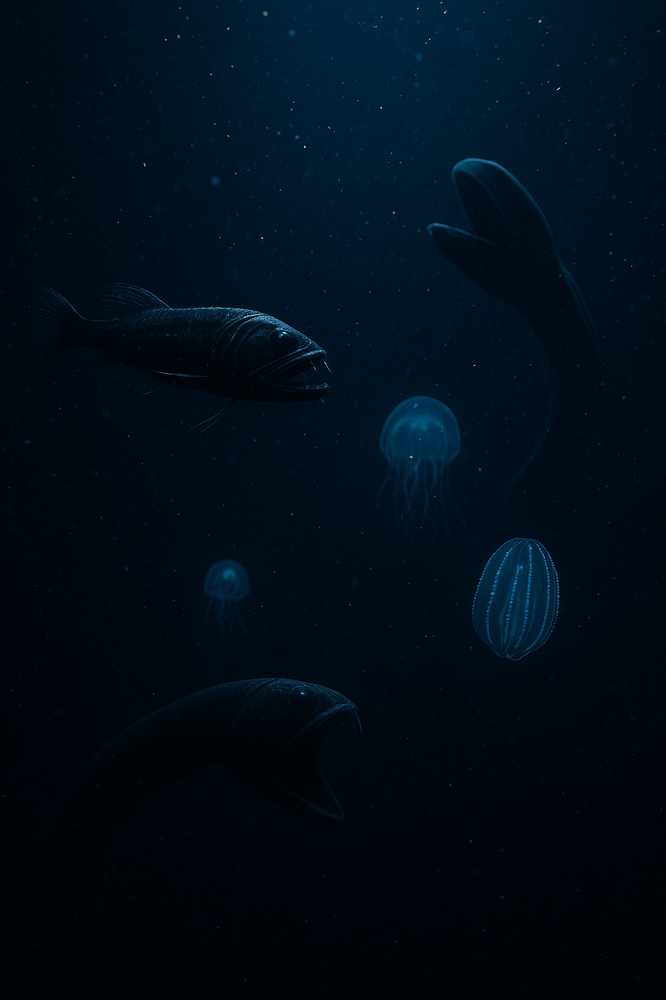

🌑 O Reino da Escuridão
De 1.000 a 4.000 metros de profundidade, a luz desaparece completamente e reina o silêncio absoluto.
- ❄️ Temperatura próxima de 0°C.
- 🐡 A pressão é 400 vezes maior que na superfície.
- 🦑 Habitam criaturas como peixes-fantasma e lulas-colossais.
- 🌫️ Animais lentos e resistentes à escassez de alimento.
- 🔍 Ecosistemas frágeis e pouco explorados.
